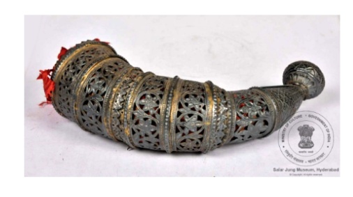

🔇 Is bhasha me is vastu ka audio abhi uplabdh nahi hai.
1. सींग का डिब्बा

अभिलेख संख्या: XLIV-39
सुंदर तरीके से गिल्ट (सुनहरी पेंटिंग/पॉलिश) किए हुए, बड़े बैल के सींग का घुमावदार डिब्बा माउंट, जो तीन हिस्सों में बना है। इसमें से दो हिस्से एक जैसे हैं, दो चूड़ियों की तरह जुड़े हुए हैं, जबकि तीसरे हिस्से में एक कली के आकार का घुंडी है और इसका निचला भाग भी बाकी दो हिस्सों जैसा है। चूड़ियों जैसे हिस्सों पर फूलों की बेल और पत्तियों की डिज़ाइन उकेरी गई है। घुंडी के ऊपर एक फूल है। काम बहुत ही शानदार तरीके से किया गया है और विभिन्न हिस्सों में देखने के लिए बहुत कुछ है। यह एक बहुत ही दुर्लभ वस्तु है, जिसमें असाधारण स्तर की कारीगरी दिखाई देती है। सींगों का उपयोग विभिन्न तरीकों से किया जाता है, जैसे कि संकेत देने वाले वाद्य यंत्र या सजावट के लिए। यह वस्तु 19वीं शताब्दी के उत्तरार्ध की है और भारत से उत्पन्न हुई है।
1. सींग का डिब्बा
अभिलेख संख्या: XLIV-39
सुंदर तरीके से गिल्ट (सुनहरी पेंटिंग/पॉलिश) किए हुए, बड़े बैल के सींग का घुमावदार डिब्बा माउंट, जो तीन हिस्सों में बना है। इसमें से दो हिस्से एक जैसे हैं, दो चूड़ियों की तरह जुड़े हुए हैं, जबकि तीसरे हिस्से में एक कली के आकार का घुंडी है और इसका निचला भाग भी बाकी दो हिस्सों जैसा है। चूड़ियों जैसे हिस्सों पर फूलों की बेल और पत्तियों की डिज़ाइन उकेरी गई है। घुंडी के ऊपर एक फूल है। काम बहुत ही शानदार तरीके से किया गया है और विभिन्न हिस्सों में देखने के लिए बहुत कुछ है। यह एक बहुत ही दुर्लभ वस्तु है, जिसमें असाधारण स्तर की कारीगरी दिखाई देती है। सींगों का उपयोग विभिन्न तरीकों से किया जाता है, जैसे कि संकेत देने वाले वाद्य यंत्र या सजावट के लिए। यह वस्तु 19वीं शताब्दी के उत्तरार्ध की है और भारत से उत्पन्न हुई है।
1. కొమ్ము పెట్టె
Acc No: XLIV-39
ఈ అరుదైన కళాఖండం 19వ శతాబ్దం చివరి భాగం నాటి భారతదేశం నుండి వచ్చింది. ఇది బంగారు పూత వేయబడి, అందంగా చెక్కబడిన పెద్ద ఎద్దు కొమ్ముతో తయారు చేయబడిన పెట్టె అమరిక . ఈ పెట్టె అమరిక మూడు భాగాలుగా ఉంది. మొదటి రెండు భాగాలు రెండు గాజులు కలిపినట్లుగా ఉండగా, మూడవ భాగానికి మొగ్గ ఆకారపు గుండీ ఉంది, దాని కింది భాగం కూడా మిగిలిన రెండు భాగాల మాదిరిగానే ఉంటుంది. గాజు ఆకారంలో ఉన్న భాగాలపై కత్తిరించిన పూల లతలు మరియు ఆకుల అంచులు చెక్కబడ్డాయి. గుండీ పైభాగంలో ఒక పువ్వు కనిపిస్తుంది. ఈ వస్తువుపై చేసిన పని చాలా అద్భుతంగా, వివిధ భాగాలలో చాలా వివరాలు కనిపిస్తూ, అరుదుగా కనిపించే అత్యున్నత స్థాయి కళా నైపుణ్యాన్ని ప్రదర్శిస్తోంది. పూర్వకాలంలో కొమ్ములను సిగ్నల్ పరికరంగా లేదా అలంకరణ కోసం ఉపయోగించేవారు.
۱. سینگ کا غلاف
Acc No: XLIV-39
یہ سنہری رنگت کا حامل، نہایت خوبصورتی سے خم دار بڑے بیل کے سینگ کا غلاف ہے، جو تین حصوں پر مشتمل ہے۔ ان میں سے دو حصے چوڑیوں کی مانند ہیں جو باہم جڑے ہوئے ہیں، جبکہ تیسرا حصہ کمل نما ابھار پر مشتمل ہے اور اس کا نچلا حصہ بھی باقی دونوں حصوں سے مشابہت رکھتا ہے۔ چوڑی نما حصوں پر تراشیدہ پھول دار بیل بوٹوں کے نقوش اور پتوں سے مزین حاشیہ کندہ کیا گیا ہے۔
اس فن پارے کی کاریگری نہایت نفیس اور باریک بینی کی آئینہ دار ہے، اور اس کے مختلف حصوں میں نمایاں تفصیلی ہنرمندی دیدنی ہے۔ یہ ایک نہایت نایاب شے ہے جو اعلیٰ درجے کی غیر معمولی دستکاری کا مظہر ہے۔ سینگ مختلف مقاصد کے لیے استعمال کیے جاتے رہے ہیں، مثلاً بطور اشاراتی آلہ یا آرائشی شے۔ یہ انیسویں صدی کے اواخر سے تعلق رکھتا ہے۔ اس کی ابتدا ہندوستان میں ہوئی۔
اس فن پارے کی کاریگری نہایت نفیس اور باریک بینی کی آئینہ دار ہے، اور اس کے مختلف حصوں میں نمایاں تفصیلی ہنرمندی دیدنی ہے۔ یہ ایک نہایت نایاب شے ہے جو اعلیٰ درجے کی غیر معمولی دستکاری کا مظہر ہے۔ سینگ مختلف مقاصد کے لیے استعمال کیے جاتے رہے ہیں، مثلاً بطور اشاراتی آلہ یا آرائشی شے۔ یہ انیسویں صدی کے اواخر سے تعلق رکھتا ہے۔ اس کی ابتدا ہندوستان میں ہوئی۔
১. শিংয়ের খাপ
Acc No: XLIV-39
সোনা দিয়ে মোড়ানো বা গিল্টি করা, সুন্দরভাবে বাঁকানো একটি বড় ষাঁড়ের শিংয়ের খাপের মাউন্ট বা আবরণ, যা তিনটি অংশ নিয়ে গঠিত। এর মধ্যে দুটি অংশ দেখতে জোড়া লাগানো দুটি কঙ্কণ বা চুড়ির মতো; তৃতীয় অংশটির ওপরের দিকে কুঁড়ি আকৃতির একটি নব রয়েছে এবং এর নিচের অংশটি অন্য দুটি অংশের মতোই দেখতে। কঙ্কণ আকৃতির অংশগুলিতে লতা-পাতাযুক্ত বর্ডারের সাথে খোদাই করা ফুলের লতার নকশা রয়েছে। নবের একেবারে মাথায় একটি ফুল রয়েছে। এর কাজ অত্যন্ত নিপুণভাবে করা হয়েছে এবং এর বিভিন্ন অংশের মধ্যে দেখার মতো অনেক কিছু রয়েছে। এটি একটি অত্যন্ত বিরল শিল্পকর্ম, যেখানে উচ্চমানের কারিগরির নিদর্শন রয়েছে, যা সচরাচর চোখে পড়ে না। শিং বিভিন্নভাবে ব্যবহৃত হয়, যার মধ্যে সংকেত দেওয়ার যন্ত্র হিসাবে অথবা গৃহসজ্জার উপকরণ হিসাবে এর ব্যবহার অন্যতম। এটি ১৯ শতকের শেষের দিকের এবং এর উৎপত্তি ভারতবর্ষে।
1. રણશિંગાની ખોળ
Acc No: XLIV-39
સુંદર રીતે સુવર્ણપોલિશ કરાયેલ મોટું વળેલું બળદના શિંગની મઢાયેલી ખોળ, જે ત્રણ ભાગોમાં બનેલ છે — તેમાંના બે ભાગ બે ચુડીઓ જોડાયેલાં જેવા છે, જ્યારે ત્રીજો ભાગ કળી (કુમળો ફૂલ)ના આકારના ગુટખાવાળો છે અને તેનું નીચેનું ભાગ બાકી બે ભાગ જેવા જ આકારનું છે. ચુડી જેવા ભાગોમાં કાપકામથી બનેલા ફૂલ અને વેલો જેવા નકશા તેમજ પાંદડાની કિનારી છે. ગુટખાના ઉપરના ભાગે એક ફૂલ કોતરાયેલું છે. સમગ્ર કારીગરી અત્યંત સુંદર રીતે કરવામાં આવી છે અને દરેક વિભાગમાં જુદી જુદી બારીક વિગતો જોવા મળે છે. આ એક અતિ દુર્લભ વસ્તુ છે, જેમાં અદ્વિતીય કારીગરીનું ઉત્તમ ઉદાહરણ જોવા મળે છે. શિંગોનો ઉપયોગ વિવિધ રીતે થતો હતો — સંકેત આપવા માટેના વાદ્ય તરીકે કે શોભા માટે. આ 19મી સદીના અંત સમયકાળની છે અને તે ભારતમાં નિર્મિત છે.
1. ಹಾರ್ನ್ ಕೇಸ್
Acc No: XLIV-39
ಸೊಗಸಾಗಿ ಕೆತ್ತಲಾದ ಮತ್ತು ಚಿನ್ನದ ಲೇಪನವಿರುವ ದೊಡ್ಡ ಎತ್ತಿನ ಕೊಂಬಿನ ಆವರಣದ ಮೂರು ಭಾಗಗಳು ಇಲ್ಲಿವೆ. ಇವುಗಳಲ್ಲಿ ಎರಡು ಭಾಗಗಳು ಒಂದಕ್ಕೊಂದು ಜೋಡಿಸಲಾದ ಎರಡು ಬಳೆಗಳಂತೆ ಕಾಣುತ್ತವೆ. ಮೂರನೇ ಭಾಗವು ಮೊಗ್ಗಿನ ಆಕಾರದ ಹಿಡಿಕೆಯನ್ನು ಹೊಂದಿದ್ದು, ಅದರ ಕೆಳಭಾಗವು ಉಳಿದೆರಡು ಭಾಗಗಳ ವಿನ್ಯಾಸವನ್ನೇ ಹೋಲುತ್ತದೆ. ಬಳೆಯ ಆಕಾರದಲ್ಲಿರುವ ಈ ಭಾಗಗಳು, ಹೂವಿನ ಬಳ್ಳಿಯ ಕತ್ತರಿಸಿದ ವಿನ್ಯಾಸಗಳನ್ನು ಹಾಗೂ ಎಲೆಗಳ ಅಂಚನ್ನು ಹೊಂದಿವೆ. ಹಿಡಿಕೆಯ ಮೇಲ್ಭಾಗದಲ್ಲಿ ಒಂದು ಸುಂದರವಾದ ಹೂವಿದೆ. ಇದರ ಮೇಲಿನ ಕರಕುಶಲ ಕೆಲಸವನ್ನು ಅತ್ಯಂತ ನಾಜೂಕಾಗಿ ಮಾಡಲಾಗಿದ್ದು, ಇದರ ವಿವಿಧ ಭಾಗಗಳಲ್ಲಿ ಗಮನಿಸಲು ಮತ್ತು ಆನಂದಿಸಲು ಸಾಕಷ್ಟು ಸೂಕ್ಷ್ಮ ವಿವರಗಳಿವೆ. ಇದು ಅತಿ ವಿರಳವಾಗಿ ಕಂಡುಬರುವ, ಅತ್ಯುನ್ನತ ಮಟ್ಟದ ಕರಕುಶಲತೆಯನ್ನು ಹೊಂದಿರುವ ಬಹು ಅಪರೂಪದ ಕಲಾಕೃತಿಯಾಗಿದೆ. ಸಾಮಾನ್ಯವಾಗಿ ಪ್ರಾಣಿಗಳ ಕೊಂಬುಗಳನ್ನು ಸಂಕೇತಗಳನ್ನು ನೀಡುವ ವಾದ್ಯವಾಗಿ ಅಥವಾ ಅಲಂಕಾರಿಕ ವಸ್ತುವಾಗಿ ಸೇರಿದಂತೆ ವಿವಿಧ ರೀತಿಯಲ್ಲಿ ಬಳಸಲಾಗುತ್ತದೆ. ಭಾರತದಲ್ಲಿಯೇ ರೂಪುಗೊಂಡಿರುವ ಈ ಅದ್ಭುತ ಕಲಾಕೃತಿಯು 19ನೇ ಶತಮಾನದ ಅಂತ್ಯದ ಕಾಲಕ್ಕೆ ಸೇರಿದೆ.
୧. ଶିଙ୍ଘ ଖୋଳ
Acc No: XLIV-39
ଏହା ସୁନା ରଙ୍ଗରେ ଛାଉଣୀ ଦିଆ ଯାଇଥିବା, ଗୋଟିଏ ଶିଙ୍ଘର ଖୋଳ,ଯାହାକୁ ତିନୋଟି ମାଉଣ୍ଟ୍ ଖଣ୍ଡରେ ତିଆରି କରାଯାଇଛି, ଯାହା ମଧ୍ୟରୁ ଦୁଇ ଭାଗକୁ ଚୁଡ଼ି ପରି ସଂଯୋଗ କରା ହୋଇଛି, ତୃତୀୟଟି କଟି ଆକାରର ନବ୍ ପରି ତିଆରି ହୋଇଛି, ଏବଂ ତଳ ଅଂଶକୁ ଦେଖିଲେ ଜାଣି ପରିବା ଯେ ଏହା ଅନ୍ୟ ଦୁଇଟି ସହିତ ସମାନ ଭଳି ଦେଖା ଯାଉଅଛି। ଚୁଡ଼ି ଆକାରର ଖଣ୍ଡଗୁଡ଼ିକୁ ଲକ୍ଷ୍ୟ କଲେ ଦେଖିପାରିବା ସେଥିରେ ଫୁଲ ଏବଂ ଲତାର ବିଭିନ୍ନ ଡିଜାଇନ୍ ଏବଂ ସୀମାରେ ପତ୍ର ଶୈଳୀରେ ଖୋଦିତ ହୋଇଛି। ନବ୍ ଉପରେ ଗୋଟିଏ ଫୁଲର ଚିତ୍ର ରହିଛି। ଏହାର କାରୁକାର୍ଯ୍ୟ ଅତି ମନୋରମ ଏବଂ ଏହାର ବିଭିନ୍ନ ଭାଗରେ ନୂତନ କାରୁକାର୍ଯ୍ୟ ସମ୍ପନ୍ନ ହୋଇଥିବାର ଆମେ ଦେଖିପାରିବା । ଏହା ଅତ୍ୟନ୍ତ ବିରଳ କାରୁକାର୍ଯ୍ୟ ପୂର୍ଣ୍ଣ ବସ୍ତୁ ଅଟେ, ଯେଉଁଥିରେ ଉଚ୍ଚ ସ୍ତରର କାରିଗରୀ ଦେଖିବାକୁ ମିଳିଥାଏ ଏବଂ ଏହିପରି ବହୁତ କମ୍ ଦେଖାଯାଇଥାଏ। ଶିଙ୍ଘକୁ ବିଭିନ୍ନ ଉପାୟରେ ବ୍ୟବହାର କରାଯାଇଥାଏ, ଯେପରି କି ସଙ୍କେତ ମୂଳକ ବାଦ୍ୟଯନ୍ତ୍ର ଭାବରେ କିମ୍ବା ସାଜସଜ୍ଜା ନିମନ୍ତେ। ଏହାର ଇତିହାସ ଉନବିଂଶ ଶତାବ୍ଦୀର ଶେଷ ଭାଗରେ ଦେଖାଯାଏ। ଏହା ଭାରତରେ ନିର୍ମିତ ହୋଇଥିଲା।
1. सींग का डिब्बा
अभिलेख संख्या: XLIV-39
सुंदर तरीके से गिल्ट (सुनहरी पेंटिंग/पॉलिश) किए हुए, बड़े बैल के सींग का घुमावदार डिब्बा माउंट, जो तीन हिस्सों में बना है। इसमें से दो हिस्से एक जैसे हैं, दो चूड़ियों की तरह जुड़े हुए हैं, जबकि तीसरे हिस्से में एक कली के आकार का घुंडी है और इसका निचला भाग भी बाकी दो हिस्सों जैसा है। चूड़ियों जैसे हिस्सों पर फूलों की बेल और पत्तियों की डिज़ाइन उकेरी गई है। घुंडी के ऊपर एक फूल है। काम बहुत ही शानदार तरीके से किया गया है और विभिन्न हिस्सों में देखने के लिए बहुत कुछ है। यह एक बहुत ही दुर्लभ वस्तु है, जिसमें असाधारण स्तर की कारीगरी दिखाई देती है। सींगों का उपयोग विभिन्न तरीकों से किया जाता है, जैसे कि संकेत देने वाले वाद्य यंत्र या सजावट के लिए। यह वस्तु 19वीं शताब्दी के उत्तरार्ध की है और भारत से उत्पन्न हुई है।
1. കൊമ്പിൻ്റെ കവചം
Acc No: XLIV-39
സ്വർണ്ണം പൂശിയതും മനോഹരമായി വളഞ്ഞതുമായ വലിയൊരു കാളക്കൊമ്പിൻ്റെ കവചമാണിത്. മൂന്ന് ഭാഗങ്ങൾ ചേർന്നതാണ് ഇതിൻ്റെ ഘടന. ഇതിൽ രണ്ട് ഭാഗങ്ങൾ രണ്ട് വളയങ്ങൾ ഒന്നിച്ചു ചേർത്തതുപോലെയാണ് കാണപ്പെടുന്നത്. മൂന്നാമത്തെ ഭാഗത്തിന് മുകുളാകൃതിയിലുള്ള ഒരു അഗ്രവും ഇതിൻ്റെ മറ്റ് രണ്ട് ഭാഗങ്ങൾക്ക് സമാനമാണ്. വളയുടെ ആകൃതിയിലുള്ള ഭാഗങ്ങളിൽ വള്ളികളോടു കൂടിയ പൂക്കളും ഇലകൾ കൊണ്ടുള്ള അതിരുകളും കൊത്തിയിട്ടുണ്ട്. ശൃംഗാകൃതിയിലുള്ള ഇതിൻ്റെ അഗ്രഭാഗത്ത് വിടർന്ന ഒരു പുഷ്പം ആലേഖനം ചെയ്തിട്ടുണ്ട്. ഇതിലെ ഓരോ ഭാഗങ്ങളിലും സൂക്ഷ്മമായ ഒട്ടനവധി കലാവൈഭവങ്ങൾ ദർശിക്കാവുന്നതാണ്. അപൂർവ്വമായി മാത്രം കാണപ്പെടുന്ന അതിശയിപ്പിക്കുന്ന കരകൗശലവിദ്യയാണ് ഇതിൽ പ്രയോഗിച്ചിരിക്കുന്നത്. കൊമ്പുകൾ പൊതുവെ ആശയവിനിമയത്തിനുള്ള ഉപകരണമായോ അലങ്കാരവസ്തുക്കളായോ ആണ് ഉപയോഗിക്കാറുള്ളത്. ഭാരതത്തിൽ നിന്നുള്ള ഈ ശില്പം പത്തൊൻപതാം നൂറ്റാണ്ടിൻ്റെ അവസാന കാലഘട്ടത്തിലേതാണ്.